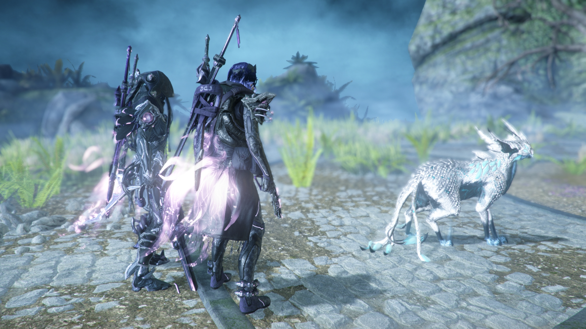
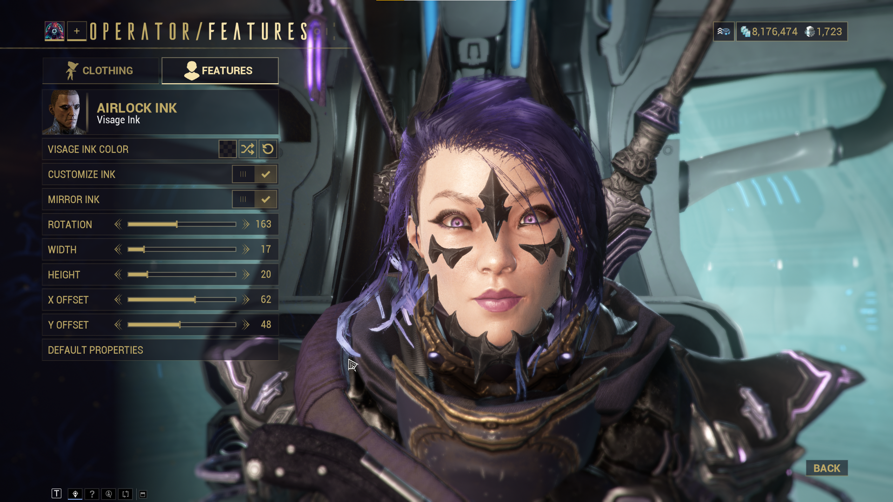

Warframe recently released it’s long awaited update, The Duviri Paradox. I’ve been silently waiting for it’s release since it’s been talked about and delayed for many years. I played some and overall and I feel like I could pretty well enjoy it if not for the bugs. I think the push for slower paced gameplay is cool but just doesn’t really have a future with the rest of Warframe. I was a little disappointed how this really ends up as a huge, sectioned off experience with little impact on the rest of the game. For example, I was hoping they’d upgrade Drifter/Operator gameplay to really stand on its on and work better in conjunction with Warframe play. Still, from a creativity and art side, quite beautiful! I have more thoughts but let’s leave it at that.
I really shouldn’t be playing games at the moment, but I can’t help but want to sink my mind into anything other than improving myself. Perhaps it’s again the daunt of starting any project. In particular, I’ve been wanting to start my dive into Unity but I can’t seem to bring myself to do it. I’m writing this out frankly, in hopes that it will help me confront my current mindset and dive right into it.
Still, I’d like to share my Drifter. Rather than the Duviri update itself, I’ve been most happy with my improve operator cosmetics, now that they’ve added visage inks. The ability to use the face paints as a pseudo eye-liner is such a game changer to making operator faces not look so weird. I also continue to enjoy my Ivara fashion. I was happy enought to even make a Reddit post hehe.


Usually the drifter faces look awkward and uncanny in Warframe so the face inks really help.

Anyways, now that I’ve shared my experience, let’s put a cap on Warframe and see about getting some development progress! Or to even get started in the first place lol.